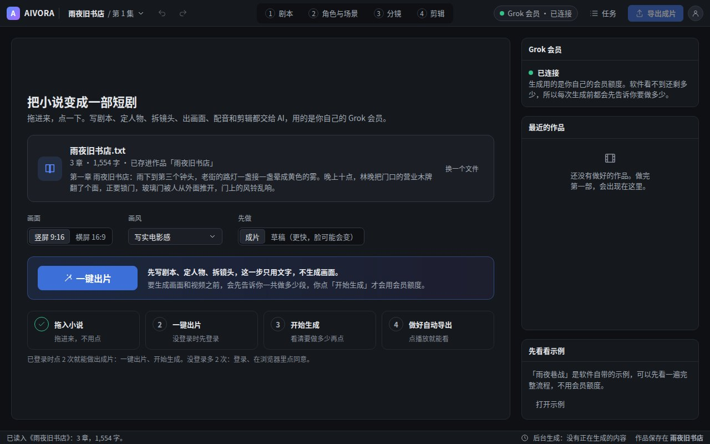
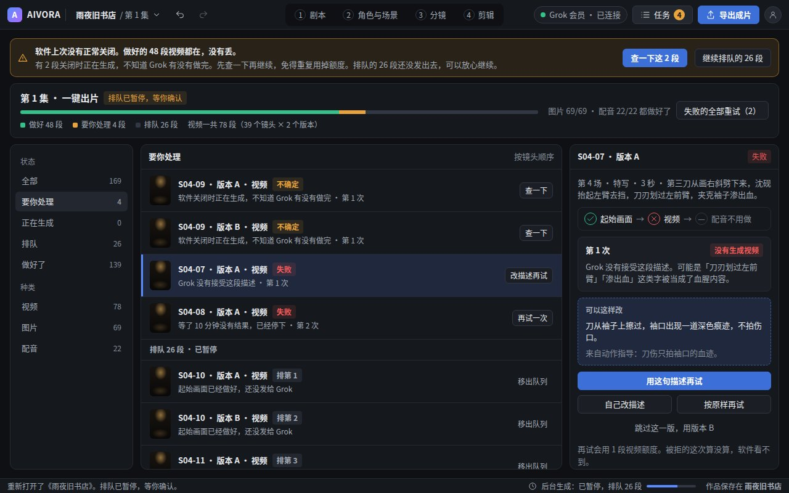
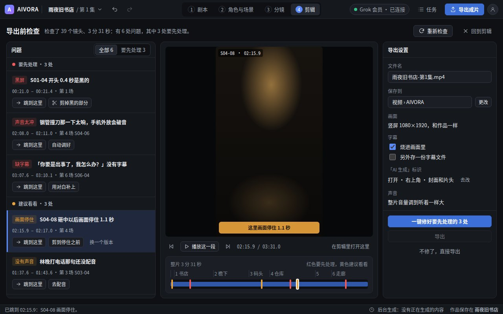
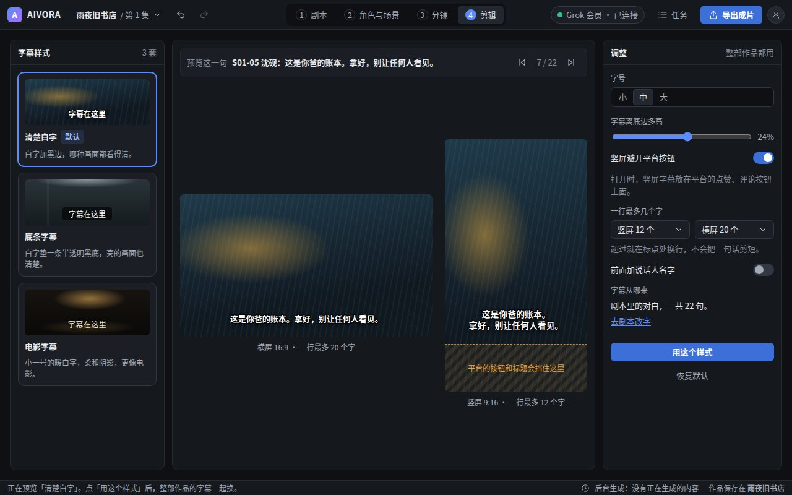
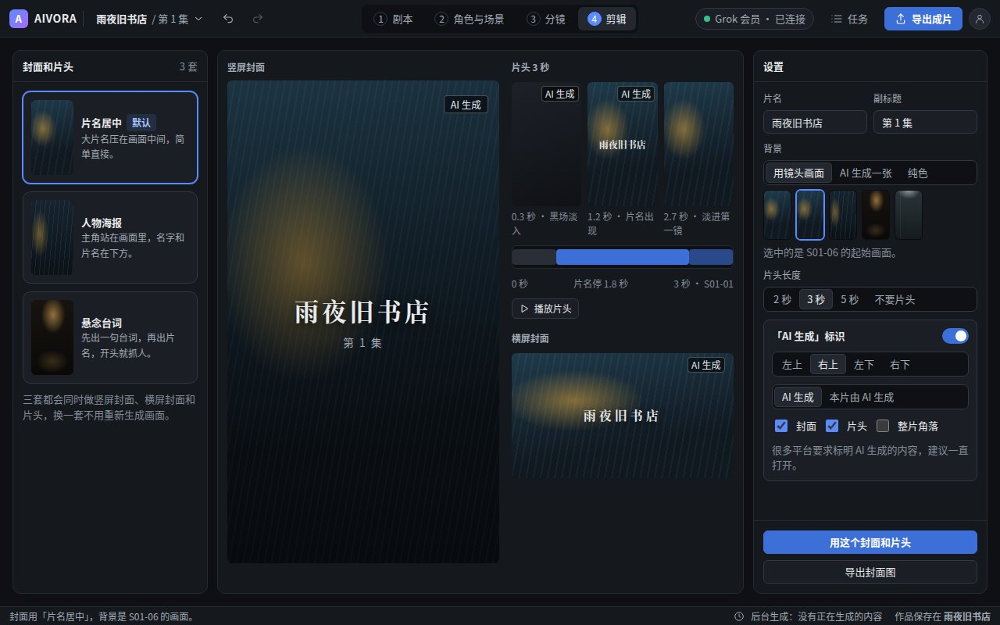
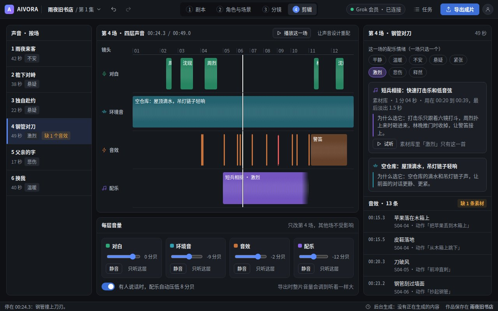
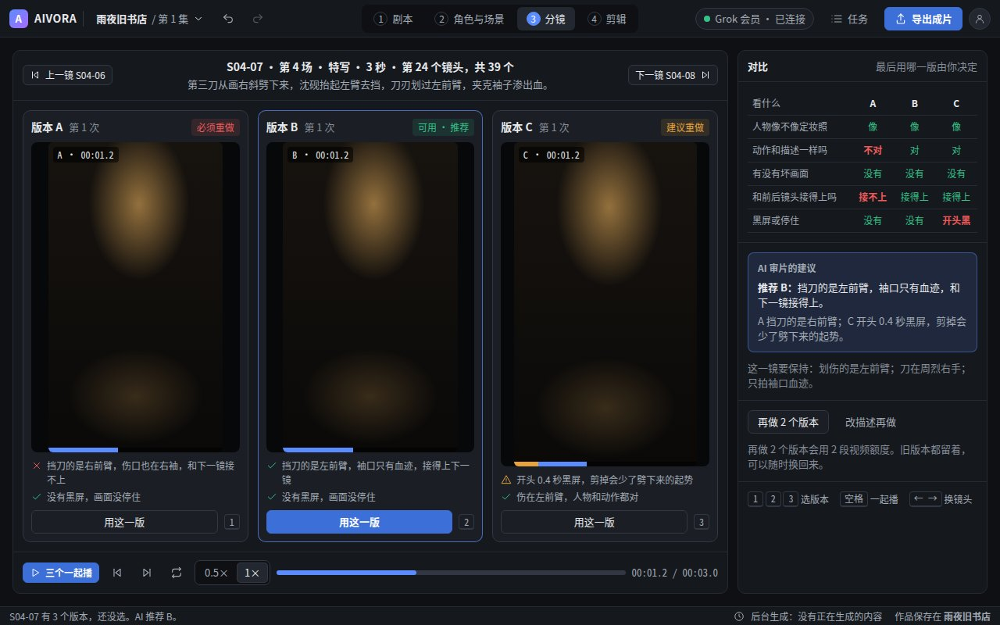

AIVORA 界面原型
7 个界面，每个都能直接在浏览器里打开，1280×800 和 1920×1080 都不会溢出或重叠。点状态名切换到那个状态，画面位置是表示光线的色块。
1. 新手首页

拖入小说，一键出片。已登录 2 次点击做出成片，最多 5 次。
2. 任务中心

生成进度、失败重试；软件意外关闭后先查清楚再接着做。
3. 导出前检查

黑屏、画面停住、没有声音、缺字幕、声音太冲，每条都能跳到出问题的位置。
4. 字幕样式

3 套模板，横屏和竖屏同时预览，竖屏标出平台按钮会挡住的地方。
5. 封面和片头

3 套模板，竖屏封面、横屏封面和 3 秒片头，可以选「AI 生成」标识。
6. 声音面板

对白、环境音、音效、配乐四层，每层有音量；每场一个配乐情绪，写清选了什么、为什么。
7. 「一选多」审片

同一镜头的几个版本并排对比、一起播放，最后由你选一个。